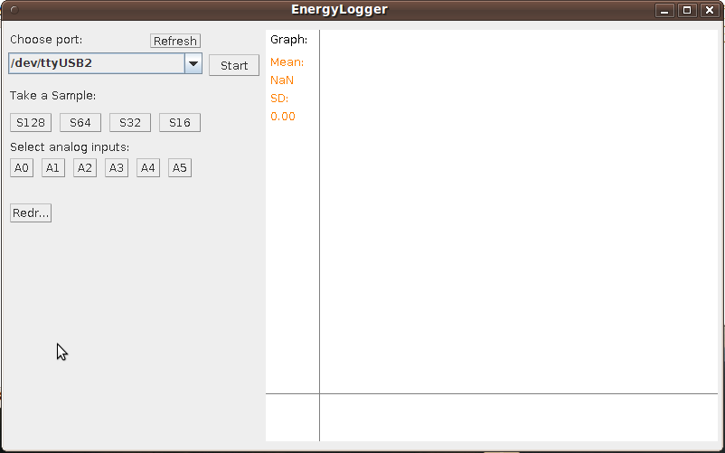

Sampler 2.0
Still in development but may be useful and easier to use than VISampler.
Main features
- Select arduino from USB port drop down list
- Take samples at different sample rates
- Select any analog input or multiple analog inputs
- See a zoom-able, pan-able graph.
- Get Mean and Standard deviation of sample
Download: Waveform Sampler.zip
To run
- Make sure you have java, rxtx lib etc installed: go through this page first: Install Java and RXTX
- Upload SamplerSketch to Arduino
- Run SamplerProgram by typing java Program into a terminal window (capital P important) in the SamplerProgram directory.
- Select USB port and click start!

Re: Sampler 2.0
hello, this java softwares look great !!
I know nothing about java and trying to make it work in windows 7 is killing me.
Is it possible to upload a compile version of the programs for easy usage? something you can just double click and use? or if not, maybe a .bat file that does the work? just put the right files inside a folder and execute the .bat?
thanks for your help
Re: Sampler 2.0
I will be honest, Im not entirely sure how to do it and especially on windows, it would take some research. If you could have a look into it that would be awesome.
Re: Sampler 2.0
I followed all the steps and I can launch the Sampler program, but Under "choose port" there is nothing to choose, the list opens empty :(
Help plz
Re: Sampler 2.0
This happened me also. running Ubuntu 10.10]. It's now working, but I'm not getting kst graphs yet, so I need to take a look at the kst installation.
I was getting an error message from Arduinocomm, saying 'package gnu.io does not exist' .
- I hadn't extracted all the rxtx files; I was missing the gnu folder completely.
Also make sure you've copied the rxtx library files correctly per openergymonitor.org/emon/node/11. I had them in the incorrect directory initially.
Eamonn
Re: Sampler 2.0
Same problem in Ubuntu 10.10 and Win XP :(
Empty list, although arduino is detected in the system
Re: Sampler 2.0
I will have a look
Re: Sampler 2.0
It work here, maybe try recompiling it with: javac *.java